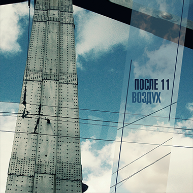

1. Пилигримы
2. Корабли
3. 20 лет до осени
4. Май
5. Самолет
6. Рядом быть feat. Хелависа
7. Лампочка
8. Победная
9. Облака
10. Ваня, Ванечка!
11. Девушка-зима
12. Хулиганка-весна
13. Лети
14. До свидания, романтика!
15. Порушка-Пораня (bonus)
16. Садик (bonus)
2. Корабли
3. 20 лет до осени
4. Май
5. Самолет
6. Рядом быть feat. Хелависа
7. Лампочка
8. Победная
9. Облака
10. Ваня, Ванечка!
11. Девушка-зима
12. Хулиганка-весна
13. Лети
14. До свидания, романтика!
15. Порушка-Пораня (bonus)
16. Садик (bonus)
Воздух (2012)
Рок-группа «После 11» представила свой второй официальный альбом под названием «Воздух» 18 октября 2012 года. Этот диск поклонники ждали целых два года. Песни для новой пластинки записывались в течение двух лет в стенах студии Большакова «Параметрика». Несколько песен уже были известны слушателям многих радиостанций, но, конечно, большая часть материала была представлена впервые. Помимо знакомой нам мелодичности группы, на этот раз «После 11» сделали акцент на слово, что привнесло еще одну изюминку в альбом, более того, в целом ряде песен есть вкрапления инструментов, которые группа никогда не использовали в своих композициях. Еще один +1 к свежему звучанию коллектива. Фактура альбома светлая, прозрачная, создается впечатление простора. Настоящий свежий воздух в музыке.«Мы развиваемся, мы растём. «Воздух» — это отражение нас сегодняшних. В новом альбоме у нас слегка изменилось звучание, теперь оно более гибкое, чем раннее, осмысленное и уверенное. И это неудивительно, так как велась очень кропотливая работа. Постоянно что-то не устраивало, хотелось что-то переделать, доделать, дописать. Каждая деталь была предусмотрена, мы хотели избежать всевозможных ошибок, как в сведении, так и в мастеринге. В результате мы сделали серьезный продукт. В целом альбом не сложный по восприятию, но ни в коем случае, не фоновый. Через эту работу прошел очень интересный этап моей жизни. Я рад поставить точку и двигаться дальше, так как хочется отпустить эти песни во взрослую жизнь».
— Юрий Постарнаков